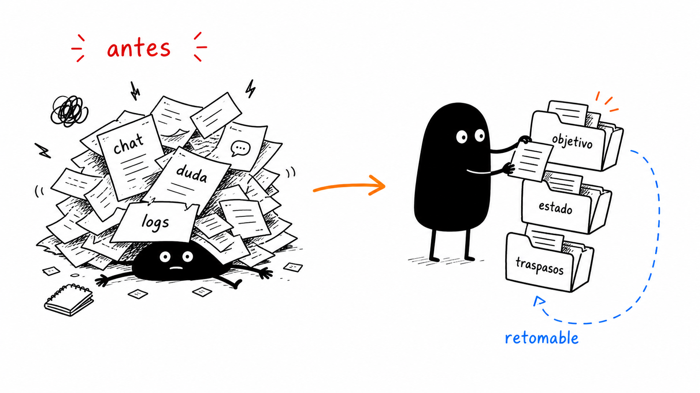
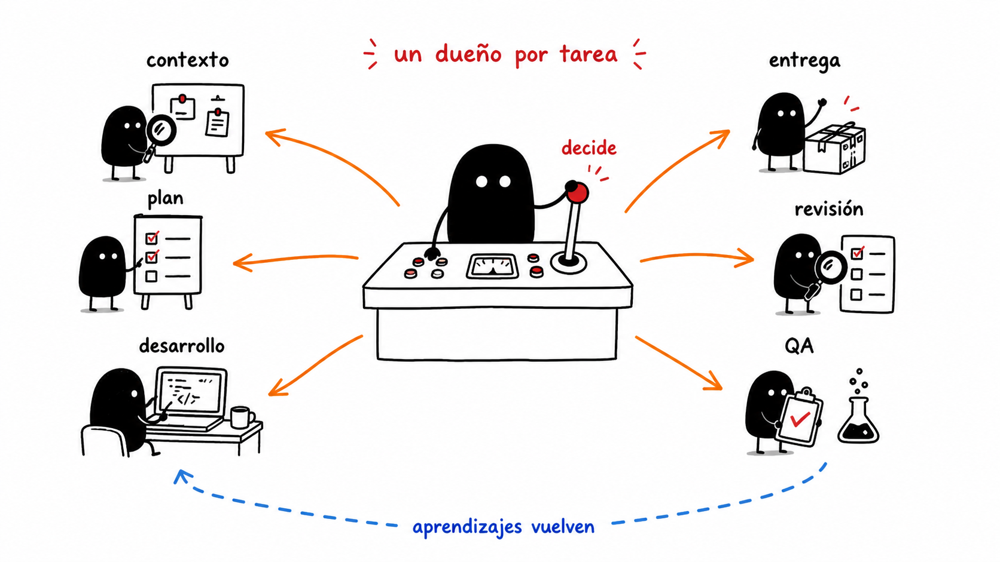
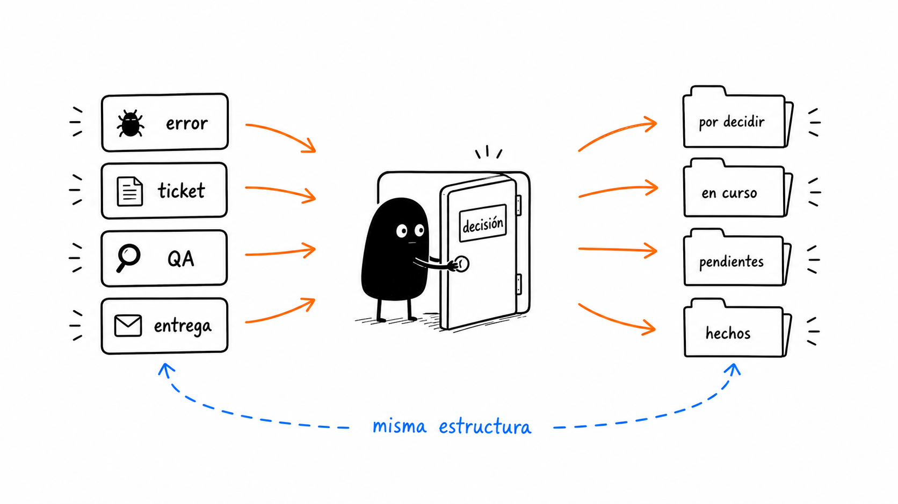

Pegas un error, solicitud o contexto, o dejas un archivo en `_inbox/`.
Demo operativa del cockpit
Un equipo de agentes para trabajar Sky sin improvisar.
Convierte solicitudes, errores, registros o mensajes sueltos en objetivos ejecutables con descubrimiento, plan, implementación, QA, revisión, aprobaciones externas, memoria y pendientes accionables.
Cómo funciona
El sistema no intenta resolver todo de golpe. Primero transforma la entrada cruda en un goal con estado, después delega roles y se detiene ante aprobaciones o bloqueos reales.
Clasifica modo, crea slug, copia template y guarda evidencia inicial.
Queda `goal.md`, `state.json`, handoffs, evidencia y `PENDIENTES.md`.
El runner decide el próximo agente y corta si falta una decisión humana.
Agentes especializados hacen descubrimiento, plan, desarrollo, QA, revisión y entrega.
Entrega evidencia, drafts externos, pendientes y mejoras candidatas al sistema.
Qué mejora del flujo anterior
Antes el orden vivía en la conversación. Ahora el orden vive en archivos retomables: si cambias de thread, el próximo agente puede reconstruir el estado sin adivinar.

ANTES
Trabajo dependiente del hilo
El contexto, las decisiones, los bloqueos y los siguientes pasos quedaban mezclados en conversación.
Orden
Manual, recordado por el desarrollador o por el hilo activo.
Bloqueos
Riesgo de brute force si el error reaparece.
QA
Dependía de que alguien pidiera explícitamente el siguiente paso.
AHORA
Trabajo gobernado por objetivo
Cada ejecución tiene contratos, gates, estado, traspasos y evidencia sanitizada.
Orden
Flow elegido por `active_flow` y próximo rol definido en `state.json`.
Bloqueos
Máximo dos intentos por clase de error; al tercero se registra pendiente.
QA
QA local, QA desplegado y entrega son fases explícitas.
Equipo de agentes
Cada agente tiene input, output, gates, stop conditions y handoff. No son prompts vagos: son contratos operativos para producir artefactos verificables.

Lee el goal, elige flujo, mantiene `state.json`, asigna roles y decide cuándo detener.
Descubre repos, docs, skills, logs y separa evidencia de inferencia.
Detecta ambigüedades, riesgos, decisiones humanas y criterios de éxito.
Define repos, archivos, orden de ejecución, gates y aceptación.
Implementa sin pisar cambios ajenos y con ownership claro por repo.
Corre checks aplicables y revisa riesgos de contratos, arquitectura y tests.
Prueba lo razonable en local sin quemar tiempo levantando todo.
Valida en QA post-merge con curls, pods, Chrome o e2e cuando aplica.
Prepara MR, changelog, documento de despliegue y borradores Jira sin publicar sin aprobación.
Registra aprendizajes y propone mejoras a skills sin modificar reglas estables sin OK.
Escenarios soportados
Puedes pedirlo directo a Codex o dejar el material en el goal folder. El flujo se elige por intención y evidencia, no por una palabra mágica.

Error en prod
Pegas registros, síntoma, capturas o DQL. El sistema arranca en flujo de incidente.
- Separa repo/path/log/desplegado/inferencia.
- Genera hipótesis verificables antes de tocar código.
- Si requiere credencial, ambiente o decisión, lo registra en `PENDIENTES.md`.
goal.md
Objetivo, alcance, inputs, no-goals y criterios de aceptación.
state.json
Flow activo, agente actual, gates, decisiones, bloqueos y aprobaciones.
handoffs/
Salida verificable de cada agente para que el siguiente no reinterprete.
evidence/
Links, paths, comandos y snippets mínimos, sin secretos ni dumps completos.
PENDIENTES.md
Lo que no se brute-forcea: impacto, causa, próximo paso y si requiere humano.
Uso real
La operación puede iniciar desde Codex con una frase natural o desde un archivo en `_inbox/`. El runner prepara el próximo prompt de agente y corta ante approvals.

# Crear un goal desde texto python3 SkyWorkflow/05-skills-tools-mcps/sky-agent-os/scripts/sky_agent_os.py \ intake --text "identificar error prod en checkout con estos logs..." --mode auto # Procesar inbox y preparar el próximo agente python3 SkyWorkflow/05-skills-tools-mcps/sky-agent-os/scripts/sky_agent_os.py run-once # Ver estado y approvals externas python3 SkyWorkflow/05-skills-tools-mcps/sky-agent-os/scripts/sky_agent_os.py status 2026-06-08-error-prod python3 SkyWorkflow/05-skills-tools-mcps/sky-agent-os/scripts/sky_agent_os.py approvals
También puedes pedirlo directo
Ejemplos de entrada natural
Bug
“Genera un sky-goal para identificar este error en prod.”
Ticket
“Desarrolla por completo VC-1234 y deja QA plan + handoff.”
Log suelto
“Te pego este error: pregúntame si quiero analizarlo, corregirlo o crear goal.”
Qué cumple hoy
Esto ya no es solo una carpeta de Markdown: hay contratos, templates, runner, intake, approvals y un wrapper de skill para operar desde Codex.

Carpeta canónica
`sky-agent-os/` contiene modelo operativo, agentes, flujos, contratos, prompts, hooks, automation y piloto.
Runtime de goals
`07-goals/<fecha-slug>/` queda preparado con `goal.md`, `state.json`, evidencia, handoffs y pendientes.
Intake automático
Puede crear objetivos desde texto, archivo o `_inbox/` y clasificar solicitud, error, QA, entrega o docs.
Runner conservador
`run-once` valida queue, encuentra el siguiente agente y se detiene si hay bloqueo o approval externa.
Política externa
GitLab push permitido; Jira write requiere draft + OK; Jira delete está prohibido.
Anti-bruteforce
Errores repetidos se diagnostican y se registran como pendientes accionables, no como loops infinitos.
Qué queda pendiente
El sistema ya puede orquestar y preparar trabajo. Lo que queda no se fuerza: se anota, se pide aprobación o se configura con conectores reales.
| Área | Estado | Próximo paso |
|---|---|---|
| Automation Codex | El prompt y `run-once` están listos; la automation debe quedar aprobada por el usuario. | Aprobar la automation “Sky Agent OS Goal Runner” cuando quieras activarla. |
| Jira write | El sistema genera drafts y approvals; no escribe sin OK. | Configurar executor/conector seguro o usar draft manual después de aprobar. |
| MR/Confluence/Docs externos | Se preparan handoffs; publicación externa queda gated. | Agregar executor por herramienta cuando el flujo demuestre estabilidad. |
| Piloto real | El piloto está definido, pero aún falta correrlo con un ticket chico. | Elegir un ticket simple o bug controlado y ejecutar la primera corrida completa. |